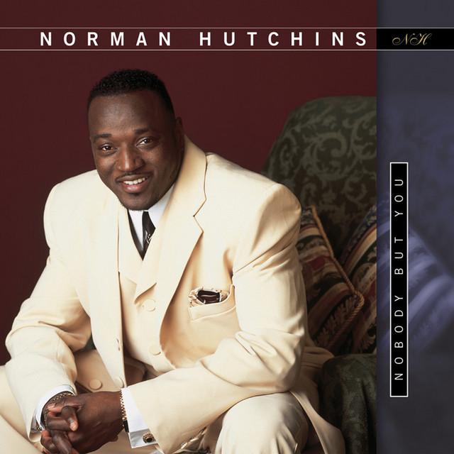

Day 122

Norman Hutchins ◆ God’s Got a Blessing (with My Name on It!) ◆ Nobody but You ◆ 2014
终于有一首带歌词的了，久违久违。这首是我在油管发现的，有个老哥做音乐主题的搞笑短视频：Confidence changed real quick 😂，超好笑wwww
短视频里的就是这首 God’s Got a Blessing。我一直对 Gospel 感兴趣，但是无从下手，这个老哥的搞笑短视频给我介绍了好多好听的 Gospel 歌，哈哈。Gospel 感觉像是爱抖露的狂热粉丝私下聚集起来搞火热的单推激唱派对。跟别的流派比起来，感觉就是特别 high，特别有活力，我很喜欢。不过有些歌的歌词有点安利邪教的感觉，安利都不敢这么唱的。
别的 Gospel 主题的搞笑视频：The pastor just tryna get to the word。这个是我看的他的第一个视频：James had his own language。还有些别的音乐主题的短视频，都很好笑，推荐看看www
It makes no difference
What you're going through
You're going to make it
God's going to see you thru
Hold your head up
Put a smile on your face
This is another test
It won't last always
Get ready for your blessing
Get ready for your miracle
Get ready for your blessing
Get ready for your miracle
I know you've been hurting
Deep down inside
Let me encourage you
It's going to be alright
Troubles and trials
Come to make you strong
Keep on believing
You keep holding on
God's got a blessing
With your name on it
God's got a blessing
With MY name on it